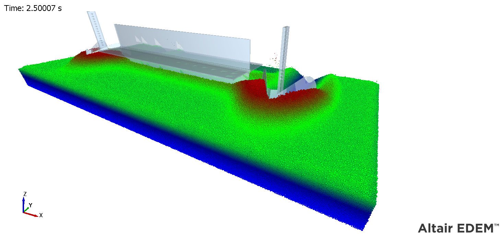
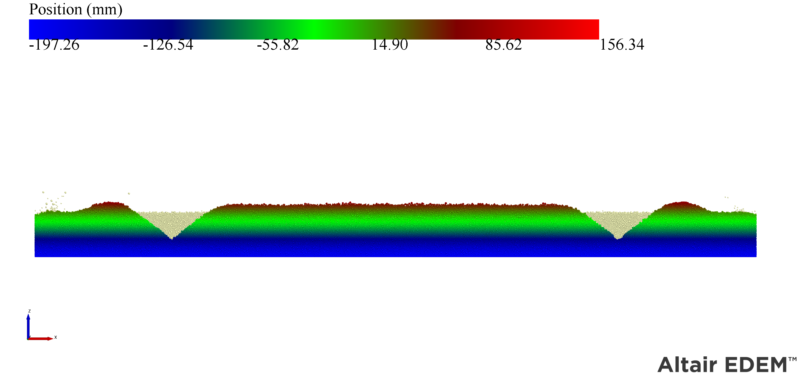

DEM Analysis of Soil-Basin Lister Interaction
Simulation-based analysis of soil-tool interaction using Altair EDEM to optimize agricultural implements for moisture conservation.
(Max Relative Error: 28.16%)
Objective
Design Challenge
Evaluating tillage implements through traditional field experiments is time-consuming, expensive, and prone to variability due to environmental factors. The objective was to utilize a virtual test bench to analyze a basin lister, an implement critical for forming rectangular basins and directing water to reduce soil erosion in semi-arid regions.
Goal
- Model soil-basin lister interactions under varying operating speeds (2, 3, and 5 km/h).
- Predict key performance indicators such as draft force, cross bund dimensions, and watercourse profiles.
- Validate the soil model and simulation accuracy against physical experimental data.
Process & Tech Stack
01 Assembly Design
Developed a 1:1 scale 3D CAD geometry of a tractor-mounted basin lister with a watercourse attachment.
02 Meshing & Loading
Modeled sandy clay loam soil using bonded spherical particles (3-5 mm radius) and applied the Hertz-Mindlin contact model with bonding to replicate cohesive soil behavior.
Tools & Languages
Visual Evidence



EDEM simulation capturing the dynamic soil displacement, cross bund formation, and watercourse profile at various operating speeds.
Simulation Workflow
Creo Modeling
Creating high-precision models of the lister unit, main frame, and ridger attachment, and importing them into the virtual soil bin.
EDEM Solver
Running iterations with a time step of 20% of the Rayleigh time step to calculate dynamic forces and soil particle momentum.
Outcome
Max Cross Bund Height
at 5 km/h
Max Side Ridge Height
at 2 km/h
Max Watercourse Depth
at 2 km/h
Max Watercourse Width
at 5 km/h
Max Draft Force
at 5 km/h
Angle of Repose
Match
Max Relative Error
Across all parameters
The DEM simulations successfully replicated real-world soil behavior, precisely matching the 30° angle of repose observed in physical tests. The analysis revealed highly nuanced soil-tool interactions dependent on operating speed. While increasing the forward speed to 5 km/h maximized the cross bund height to 161 mm and watercourse width to 540 mm, it concurrently decreased the side ridge height to 111 mm and flattened the watercourse depth. The draft force increased non-linearly, peaking at 588.57 kgf. With the relative error for all measured parameters ranging between 11.11% and 28.16%, the study demonstrated that this simulation methodology is a highly reliable virtual test bench for predicting draft forces and optimizing the geometry of tillage implements.